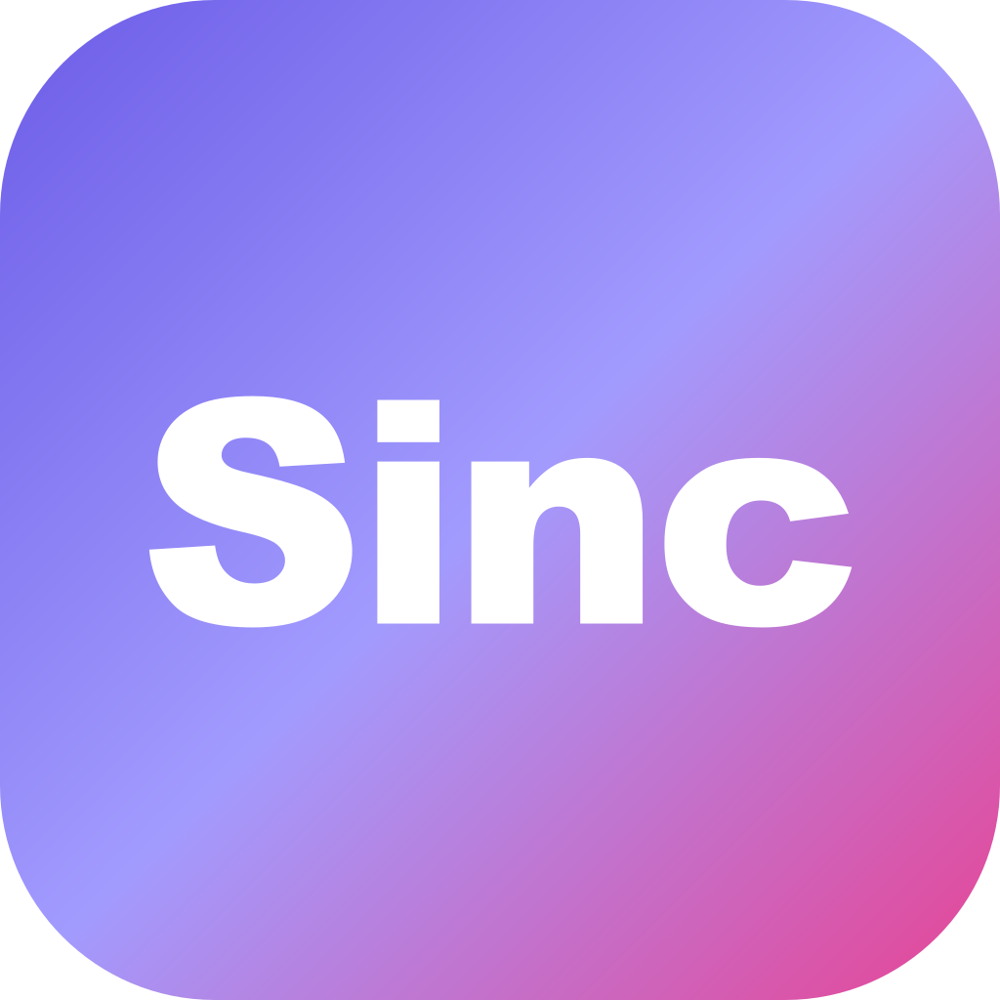

— 05 書きもの
書けなくても、 作れる。
プログラム知識ゼロのPMが、AIとともにどうやってサービスを作ったか。その過程と知見を、noteで公開中。 コードを書かなくても個人開発できる時代の、リアルな記録。
note で全記事を読む →
大手プロダクトが届いていない場所が、
世界中にある。
その余白に、まだ誰も届けていないものがある。
しんくさん（@StratAIX_AI）です。
マーケティング戦略を仕事にしながら、
ずっと「作りたいプロダクト」が頭の中にありました。
プログラムは今も一行も書けません。
最初のプロトタイプを3人に見せたら、3人とも1回触って終わりでした。
それでも、続けています。
17歳のころ、自分の顔を客観的に評価してもらえるサービスを作りたかったんです。 ザッカーバーグがFacebookを生み出した衝動と同じものだったと気づいたのは、ずっとあとのことでした。
本棚にはアプリ制作の本が並んでいました。 アイデアはありました。市場を見る目もありました。 ただ、プログラムが書けなかった。一行も。「自分で作る」にはあまりにもハードルが高すぎました。
AIが話題になるたびにいち早く試してきました。 そしてClaude Codeを使ったとき、それが変わりました。 夜中の2時に、ブラウザでページが開きました。自分が書かせたコードが、ちゃんと動いていました。誰もいない部屋で、一人で笑いました。
最初のサービス「Sinc」は、自分自身の生きづらさから生まれました。 会議で正論を言ったら空気が凍ったこともあります。なぜかいつも、少しだけずれている気がしていました。 それでも数人だけ、本当に話が合う人間がいました。 その人たちの存在は、人生においてかけがえのないものでした。
世界は広いはずです。同じように感じている仲間が、どこかにいると信じています。 それを証明したくて、Sincを作りました。まだ証明の途中ですが。

プログラム知識ゼロのPMが、AIとともにどうやってサービスを作ったか。その過程と知見を、noteで公開中。 コードを書かなくても個人開発できる時代の、リアルな記録。
note で全記事を読む →
現役マーケターとして毎日AIを実務に使い、自分の作業時間を10分の1にしました。
高いツールも、エンジニアへの依頼も不要です。
同じことをあなたの仕事で実現するための、1on1サポートです。
お気軽にどうぞ。返信まで2〜3営業日いただきます。
プロダクト開発の相談、コラボレーション、取材など、お気軽にどうぞ。
「こういうサービスがあればいいのに」という話は大歓迎です。
誰も解いていない問い——そこに、一番面白い仕事があると思っています。
Apple and the Apple logo are trademarks of Apple Inc. App Store is a service mark of Apple Inc., registered in the U.S. and other countries. Google Play and the Google Play logo are trademarks of Google LLC.


この人が作りたかったのは、たぶんサービスじゃない。
「ここにいていい」と思える場所。
自分だけが感じているわけじゃないという確認。
何度も手が止まったと思う。それでもここにある。
合わなかった場所があったからこそ、作れるものが、たぶんある。